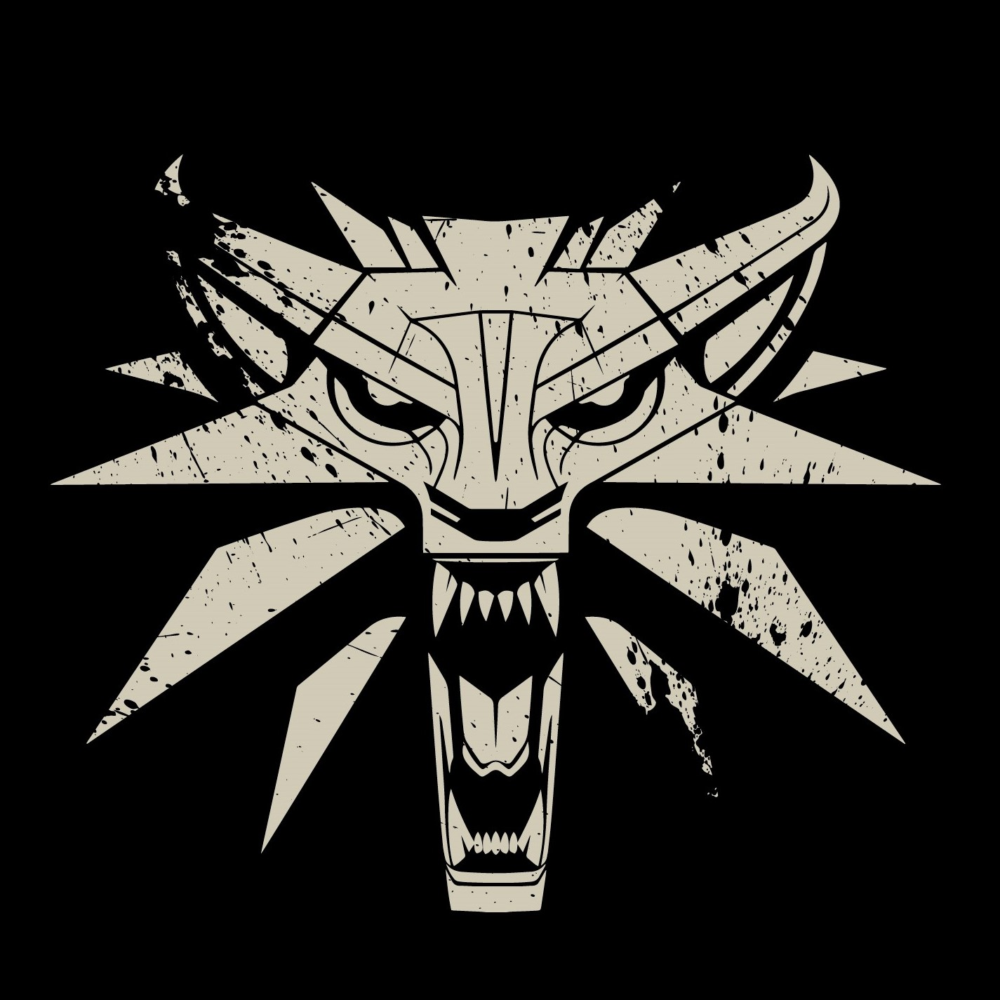
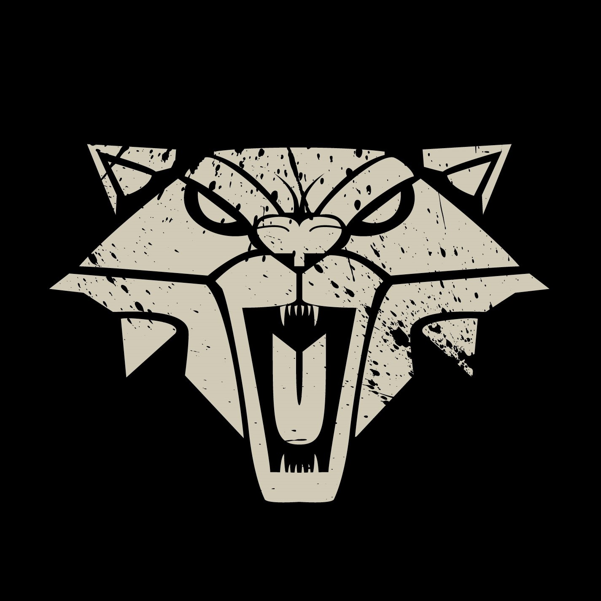
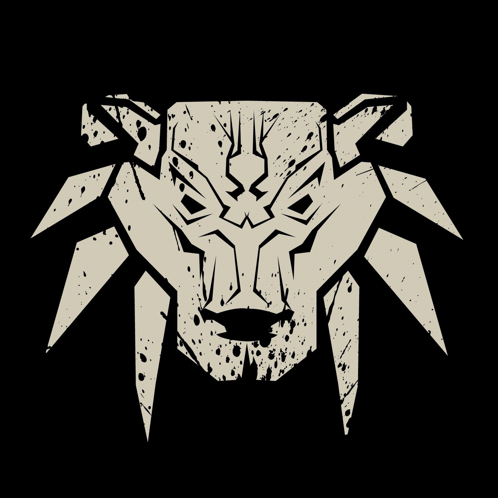
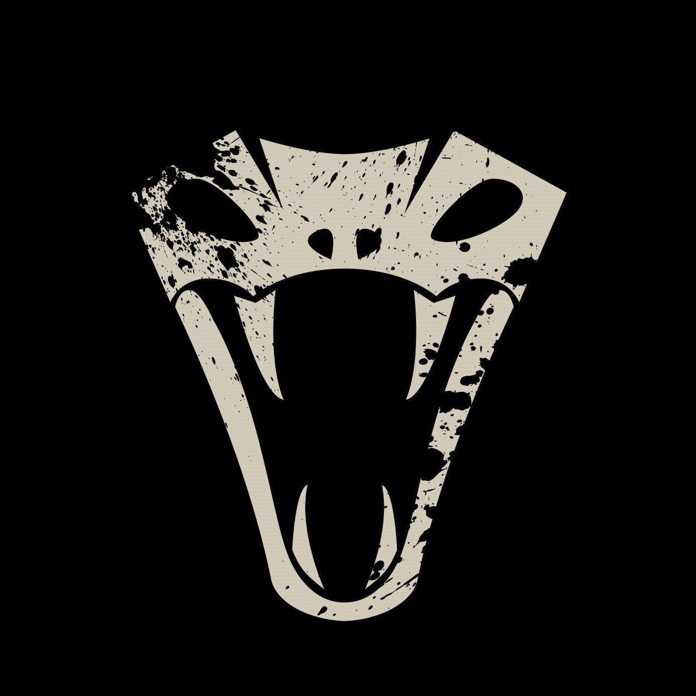
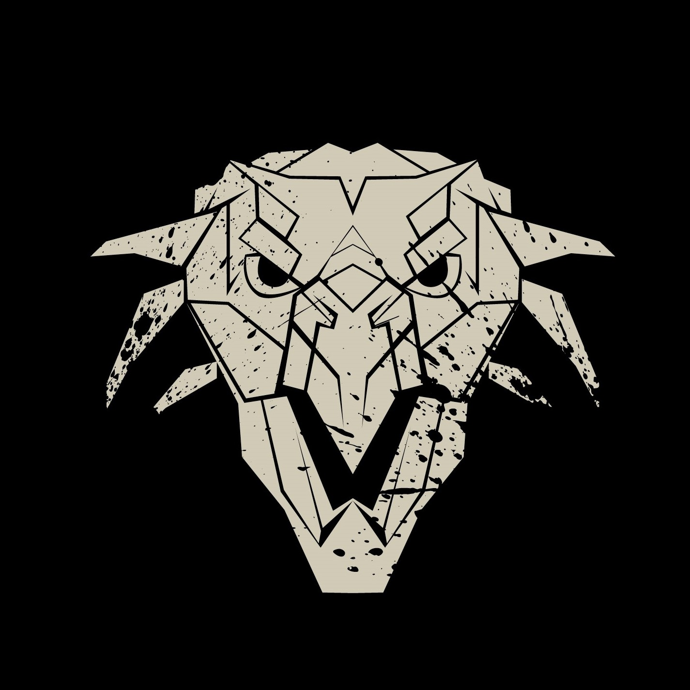

|  | School of The Wolf |
|---|---|
| Campus: Kaer Morhen
It is the most recognized witcher school and the training grounds of The White Wolf himself, Geralt of Rivia. Witchers from this school are reputed for their professionalism and reliability in killing monsters. |
|
|  | School of The Cat |
| Campus: Dyn Marv Caravan
These witchers don't uphold political neutrality like other schools and are known for their work as assassins more so than monster hunters. The mutations of these students are modified, strengthening their emotions rather than muting them. |
|
|  | The School of Bear |
| Campus: Haern Caduch
Bear School witchers have abnormally heightened stamina and strength, donning heavy armor in favor of defense over agility. |
|
|  | School of The Viper |
| Campus: Gorthur Gvaed
The school gained their name from their signature style of using dual blades in incalculable strikes, as if with a viper's fangs. They are also famed for their focus on subterfuge and stealth when slaying monsters. |
|
|  | School of The Griffin |
| Campus: Gorthur Gvaed
The Griffin School trains in a battle style focused on Sign usage and managing multiple opponents. Witchers from the school of the Griffin are said to uphold the knightly etiquette of the old Order and are well respected by other schools. |